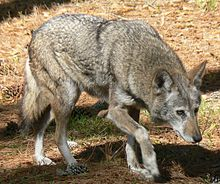

Graceful Red Wolf
The red wolf (Canis rufus, formerly Canis lupus rufus), also known as the Florida wolf or Mississippi Valley wolf is a canid native to the Southeastern United States. It is generally, morphologically, an intermediate between the coyote and gray wolf, and is of a reddish, tawny color.
distributed throughout the Southeastern US, the red wolf was nearly driven to extinction by the mid-1900s due to aggressive predator control programs, habitat destruction and extensive hybridization with coyotes. By the late 1960s, it occurred in small numbers in the Gulf Coast of western Louisiana and eastern Texas. Fourteen of these survivors were selected to be the founders of a captively bred population, which was established in the Point Defiance Zoo and Aquarium between 1974 and 1980. After a successful experimental relocation to Bulls Island off the coast of South Carolina in 1978, the red wolf was declared Extinct in the Wild in 1980 in order to proceed with restoration efforts. In 1987, the captive animals were released into North Carolina's Alligator River National Wildlife Refuge, with a second release taking place two years later in the Great Smoky Mountains National Park.
The red wolf's taxonomic status has been a subject of controversy. A 2011 genetic study indicated that it may be a hybrid species between gray wolves and coyotes. Re-analysis of this study coupled with a broader contextual analysis including behavioral, morphological and additional genetic information led to arguments that the red wolf is an independent species but has suffered from significant introgression of coyote genes likely due to decimation of red wolf packs with fragmentation of their social structure from hunting. A comprehensive review in October 2012 concluded that the red wolf is a distinct species which diverged from the coyote alongside the closely related eastern wolf 150,000-300,000 years ago. Nevertheless, this review has not been universally accepted among relevant authorities.